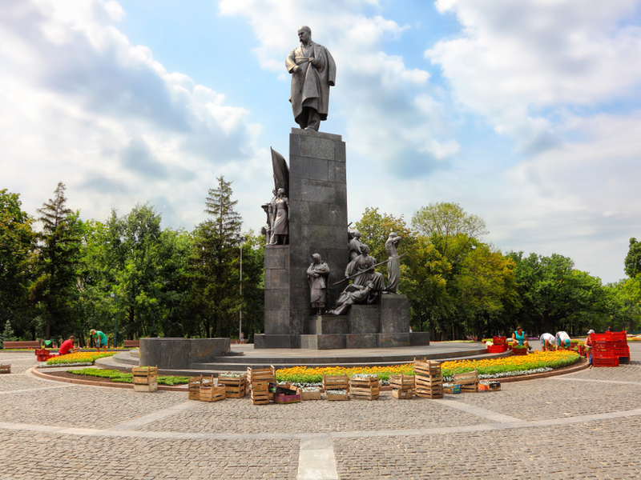

«Зеркальная струя» ― главный символ Харькова. Это оригинальный фонтан и одноименный сквер, которые расположены почти в самом центре города. Фонтан поставили как памятник в честь Дня победы. Через дорогу от «Струи» расположен Харьковский театр оперы и балета, который примечателен прежде всего цепью красивых фонтанов, ну и монументальной советской архитектурой
Ну и самая романтичная достопримечательность Харькова ― Памятник влюбленным. Совсем невесомый и легкий памятник находится в окружении фонтана и представляет собой 2 тоненькие детские фигурки, которые слились в первом поцелуе. Место очень полюбилось харьковской молодежи и здесь часто назначают свидания.

Ну и куда без харьковских парков, как отдельных видов достопримечательностей. В парке Шевченко вы найдете один из самых красивых и монументальных памятников Кобзарю, а еще огромный фонтан «Каскад» с красивейшими смотровыми площадками. В парке Горького самое большое количество аттракционов, а еще уникальная канатная дорога посреди города, которую ну точно надо попробовать всем побывавшим в Харькове.
Александровская колокольня ― шикарный вид на центр Харькова. Колокольня до сих пор остается одним из самых высоких зданий города. Подъем займет около 15-20 минут.
Колесо обозрения в парке Горького поднимет вас над городом на 55 метров. Отсюда вы рассмотрите зеленые зоны города, центр и спальные районы. Ну и все помним, что это Харьков, а значит и колесо обозрения тут самое высокое в Украине.